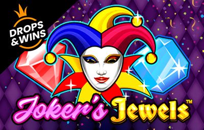

Gates of OlympusPragmatic Play
Gates of OlympusPragmatic Play Royal Fruits 5Amatic
Royal Fruits 5Amatic Sweet Bonanza 1000Pragmatic Play
Sweet Bonanza 1000Pragmatic Play Book of Ra MagicNovomatic
Book of Ra MagicNovomatic Chicken CoinWazdan
Chicken CoinWazdan Fruit MillionNetEnt
Fruit MillionNetEnt Book of the FallenPragmatic Play
Book of the FallenPragmatic Play Ultra Hot SevensAmatic
Ultra Hot SevensAmatic
Joker’s JewelsPragmatic Play Crown CoinsSlot
Crown CoinsSlot Dolphin’s PearlNovomatic
Dolphin’s PearlNovomatic Lucky Lady’s CharmNovomatic
Lucky Lady’s CharmNovomaticCerchi Chancebet Casino?
Stato attuale (in breve). Dietro il marchio resta lo stesso operatore, Vittoria Bet 2009 S.r.l. , con concessione ADM GAD 16046.
Casinò disponibili oggi
Il catalogo del vecchio brand ha valore storico e non descrive un’offerta attuale. Per slot, tavoli live e giochi da casinò usa il confronto delle piattaforme operative presente nella pagina.
Prima di scegliere verifica bonus, wagering, limiti di prelievo, documenti KYC e disponibilità dei giochi nel tuo Paese.
Licenza, sicurezza e affidabilità
Sulla legalità niente zone grigie. L'operatore lavora con concessione ADM (ex AAMS) GAD 16046: piena autorizzazione dell'Agenzia delle Dogane e dei Monopoli a offrire gioco a distanza in Italia. La titolare è Vittoria Bet 2009 S.r.l., P.IVA 12027280960, con sede fisica in Viale della Libertà 106, 95129 Catania (CT) — non la solita scatola vuota offshore, ma un'azienda italiana con oltre quindici anni sulle spalle.
A rinforzare il quadro, tre certificazioni internazionali:
- ISO 9001:2015 — gestione della qualità;
- ISO 14001:2015 — gestione ambientale;
- ISO 26000 — responsabilità sociale d'impresa.
Non tutti i bookmaker italiani possono sventolarle, e dicono qualcosa sulla struttura che sta dietro al marchio.
Sul piano tecnico, transazioni e dati personali viaggiano sotto crittografia SSL. Da concessionario ADM, la piattaforma integra gli strumenti obbligatori di gioco responsabile: limiti di deposito, autoesclusione tramite Registro Unico, verifica dell'identità. Si gioca solo se maggiorenni (18+) e i conti passano dal controllo documentale — con un vantaggio niente male: il documento lo mandi anche via WhatsApp, non solo via email.
Catalogo dei giochi Chancebet
Il cuore dell'offerta sono i Chancebet giochi : quasi 3.000 titoli tra slot e tavoli, un numero che tiene testa ai grandi nomi del mercato italiano.
Le categorie principali:
- Slot — la fetta più grossa del catalogo, dai classici a rulli alle video slot con jackpot e funzioni bonus;
- Roulette — europea e varianti da tavolo;
- Blackjack — il "21" in più versioni;
- Baccarat — per chi ama i tavoli veloci;
- Poker — con focus sul poker cash;
- Bingo — le sale virtuali all'italiana;
- Keno — pane per gli amanti dei numeri;
- Gratta e Vinci — i grattini digitali, un must per il pubblico italiano.
Tra i provider spiccano NetEnt, uno dei nomi più rispettati per grafica e RTP trasparenti, ed Espresso, storica software house italiana. Il parco fornitori non è sterminato come da operatori che ne integrano venti o trenta, ma la selezione è curata e copre tutti i gusti principali.
Chi arriva dal betting trova anche un palinsesto con 28 sport, calcio in testa, più una sezione eSports con League of Legends, Counter-Strike 2 e Dota 2 — dettaglio che non tutti i concessionari ADM mettono sul piatto.
Bonus e promozioni Chancebet
Il pezzo forte è il cashback mensile dal 15% al 25%, calcolato sulla differenza tra giocato e vinto. Tradotto: se in un mese hai puntato più di quanto hai incassato, una fetta delle perdite ti torna sotto forma di coupon. Le condizioni che contano:
- i coupon arrivano il giorno 3 di ogni mese, con tetto massimo di €750;
- validità: 1 mese per le slot, 7 giorni per le scommesse sportive;
- i coupon non valgono nelle scommesse a sistema;
- prelevabili solo le vincite generate dal coupon, non il coupon in sé.
Per qualificarti servono paletti precisi. Lato scommesse: puntate singole o multiple con quota minima 2.00 e almeno cinque bollette al mese. Nel casinò contano solo le slot, mentre per il poker vale solo il poker cash. Occhio pure alla clausola anti-abuso: giocate speculative o sfruttamento sistematico delle promo possono farti sospendere bonus o conto.
Sul bonus di benvenuto, il rollover è fissato a 35x — sopra la media italiana, dove diversi concorrenti si fermano tra 20x e 30x. Prima di accettare qualsiasi offerta, leggerti i termini per intero resta la mossa più furba: un bonus generoso con wagering pesante può valere meno di uno piccolo ma facile da sbloccare. Le condizioni possono variare nel tempo, quindi conviene sempre controllare il regolamento aggiornato sul sito.
Metodi di pagamento: depositi e prelievi
La cassa è uno dei punti forti: metodi in quantità, tarati sulle abitudini italiane (PostePay in primis) e senza commissioni sul deposito.
Metodi di deposito:
| Metodo | Note |
|---|---|
| Bonifico bancario | Il classico, tempi bancari standard |
| PostePay (VirtualPos BancoPosta) | Il preferito degli italiani |
| Skrill | E-wallet, accredito rapido |
| Rapid Transfer by Skrill | Bonifico istantaneo via home banking |
| Neteller | E-wallet, accredito rapido |
| Bollettino Postale | Per chi preferisce il canale fisico |
| Nuvei | Circuito carte |
Metodi di prelievo:
| Metodo | Tempi indicativi |
|---|---|
| Skrill / Neteller | Immediato |
| PostePay | Rapido |
| Bonifico bancario | 3-5 giorni lavorativi |
| Bonifico domiciliato | Tempi bancari |
| Prelievo presso punto vendita | In contanti sul territorio |
| Nuvei | Circuito carte |
La velocità dichiarata è immediata sui portafogli elettronici, mentre i bonifici chiedono i soliti 3-5 giorni lavorativi: tieni presente che al tempo di elaborazione della richiesta da parte dell'operatore va sommato quello del circuito di pagamento. Prima del primo prelievo la verifica dell'identità è obbligatoria: il documento lo mandi via email o WhatsApp, procedura più snella dei classici form da caricare. Un consiglio: verifica il conto appena registrato, così quando arriva la vincita non resti col fiato sospeso.
Casinò mobile e app Chancebet
L'esperienza da telefono passa dal browser: la piattaforma è ottimizzata per smartphone e tablet, sia iOS che Android , senza scaricare file APK né passare dagli store.
Da mobile gestisci ogni cosa: depositi, prelievi, attivazione dei coupon cashback, contatto con l'assistenza via Live Chat o WhatsApp. Proprio quest'ultimo canale è comodissimo da telefono: mandi il documento per la verifica direttamente in chat, senza scanner né allegati email.
L'assenza di un'app nativa da scaricare può sembrare un limite. Nella pratica, però, la web app fa il suo dovere: nessun aggiornamento da installare, zero spazio occupato in memoria, accesso immediato da qualsiasi dispositivo. E per chi gioca soprattutto alle slot in giro, la resa dei titoli NetEnt su schermo piccolo è più che buona.
Domande frequenti sul vecchio sito Chancebet
Il vecchio sito funziona ancora?
No: viene trattato come un brand storico e non come una piattaforma operativa.
Dove posso giocare adesso?
Usa i collegamenti SCOMMESSE o CASINÒ del confronto, che portano alle piattaforme attive configurate nel progetto.
Posso usare le vecchie credenziali?
Non inserirle su domini simili o presunti successori. Una nuova registrazione va effettuata soltanto sulla piattaforma attiva scelta consapevolmente.
Chancebet non è più operativo: il passo successivo
Per continuare, scegli direttamente una piattaforma attiva dal confronto: SCOMMESSE per il betting oppure CASINÒ per slot e giochi live.
Chancebet non è più operativo: il passo successivo
Non usare il vecchio accesso Chancebet né inserire credenziali su domini simili. Scegli una piattaforma attiva dal confronto.
Domande frequenti sul vecchio sito Chancebet
Il vecchio sito funziona ancora?
No: viene trattato come un brand storico e non come una piattaforma operativa.